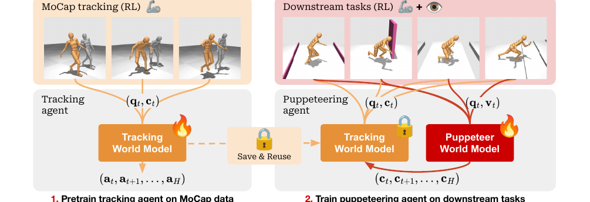
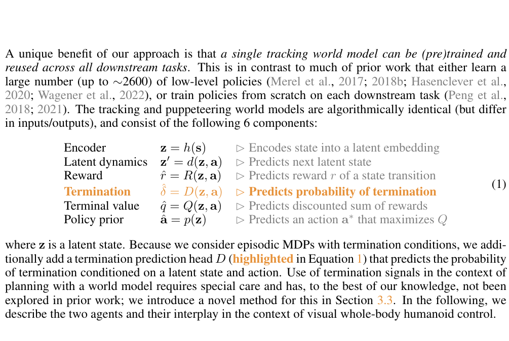
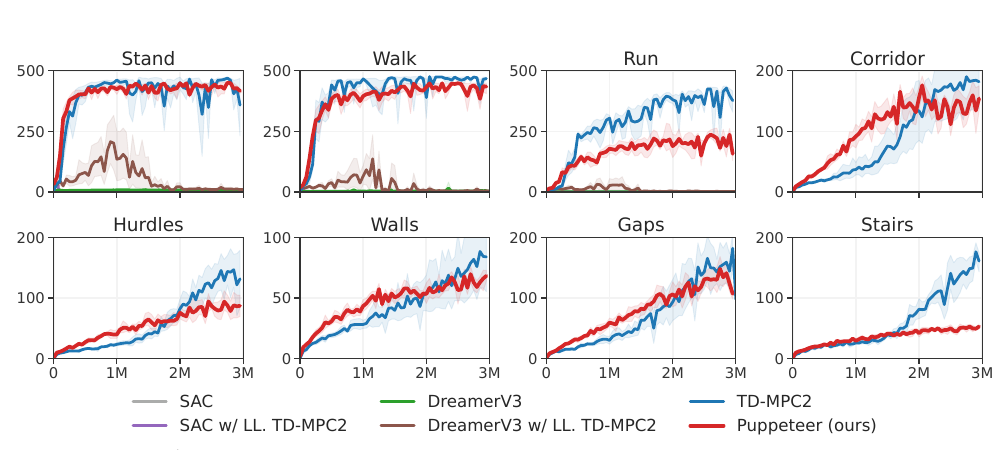
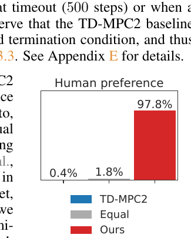
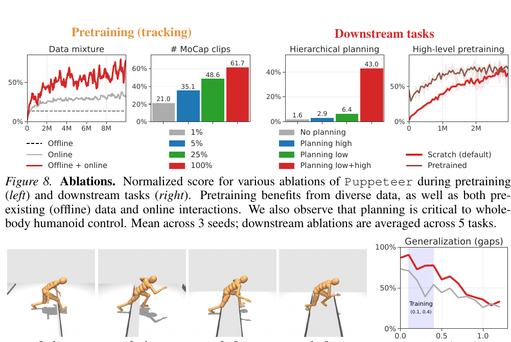

Puppeteer：把 humanoid 控制拆成两层 world model
TL;DR: Puppeteer 将 visual whole-body humanoid control 拆成两层 TD-MPC2-style world model：低层 tracking agent 用 MoCap 学会把身体端点 reference 变成自然的 joint action，高层 puppeteering agent 用视觉生成这些 reference 来完成下游任务。
Humanoid 控制的难点经常被写成高维连续控制。这个说法没有错，但它还不够具体。Puppeteer 面对的是一个 56-DoF simulated humanoid：agent 要从视觉里判断 terrain，要保持双足稳定，要处理接触和落地，还要让动作看起来像人，并避免用奇怪姿势刷高 reward。
直接把 RGB observation 映射到 56 维 joint action，会让一个 policy 同时承担视觉理解、步态生成、身体协调、接触处理和自然性约束。Puppeteer 的设计把这些职责拆开：高层只生成身体端点该去哪里，低层负责把这个几何意图执行成 joint-level action。

两个 world model 的分工
Puppeteer 有两个 agent。
低层是 tracking agent。它读取 humanoid proprioception q_t 和 abstract command c_t，通过 planning 生成一串 low-level joint actions。这个 agent 先在 CMU MoCap / MoCapAct 数据上训练，学到“身体应该怎样自然地执行参考动作”。
高层是 puppeteering agent。它读取 proprioception q_t 和 RGB observation v_t，通过 planning 生成一串 abstract commands。下游任务训练时，low-level tracker frozen，高层只需要学会怎样给 tracker 下指令。
| 组件 | 作用 |
|---|---|
| encoder | 把 state 编成 latent state |
| latent dynamics | 预测下一步 latent state |
| reward head | 预测 transition reward |
| termination head | 预测是否会 episode termination |
| terminal value | 估计短 horizon 之后的剩余 return |
| policy prior | 给 planner 提供 action proposal |
这个结构继承了 TD-MPC2 的核心路线：world model 采用 decoder-free latent modeling，在 latent space 里做 short-horizon rollout，再用 reward / value 给候选 action sequence 打分。Puppeteer 的新增压力来自 humanoid episode termination。非脚部接触地面会终止 episode，所以论文给 world model 加了 termination head，并在 planning 时用 soft truncation 处理 predicted termination。
Command 是身体端点的位置
Puppeteer 最有品味的接口选择，是 high-level action 的定义。
高层输出的 command 采用显式几何量：head、hands、feet 五个 end-effectors 的 relative 3D positions，总共 15 维。

这个接口把学习问题改小了。高层不用控制每个关节，它只需要决定身体端点在未来几个 step 应该往哪里走。低层 tracker 再把端点位置变成可执行动作。
这和传统 hierarchical RL 里常见的 latent skill embedding 有一个关键差别：end-effector command 是几何对象。它更容易解释，也更容易和 robotics 里的 task-space control 对齐。高层像在拉线，低层像一个把线牵到真实身体上的控制器。
自然性进入 action interface
Puppeteer 的自然性主要来自 low-level tracker 的行动边界。下游视觉任务的 reward 很简单，基本按 forward velocity 给分。
这个 tracker 在 MoCap reference 上训练。下游任务中，高层无法直接输出任意 joint action，只能通过 tracker 改变身体。于是 MoCap motion prior 进入了 action interface：
visual task decision
-> end-effector command
-> MoCap-trained tracker
-> joint-level humanoid action这个设计把 reward hacking 的空间压小。TD-MPC2 直接控制 humanoid 时，可以学出高 return 但很怪的 gait。论文里最直观的例子是 stairs：TD-MPC2 能拿到更高 reward，但会 rolling up stairs；Puppeteer 的 return 低一些，动作更像走路。
证据：return 之外要看动作质量
Figure 5 是任务性能。8 个任务里，Puppeteer 的 return 大体接近 TD-MPC2。SAC 和 DreamerV3 在 3M environment steps 的预算下基本没有解决这些任务。这里有一个细节值得看：DreamerV3 也是 world model 方法，但它主要通过 imagined rollouts 训练 latent policy；Puppeteer 和 TD-MPC2 在 test time 用 learned model 做 planning。Figure 8 的 ablation 也支持 planning 在这个高维控制设置里的重要性。

Return 只覆盖任务奖励的一部分。Puppeteer 最强的证据其实来自 naturalness evaluation。论文做了一个 51 人 user study，让参与者比较 Puppeteer 和 TD-MPC2 生成的 humanoid motion。Aggregate result 是 97.8% 选择 Puppeteer，1.8% 认为相同，0.4% 选择 TD-MPC2。

这个结果说明一件事：humanoid RL 不能只看 task return。一个 controller 可以完成任务，也可以用非常不自然的方式完成任务。对 physical AI 来说，动作质量本身就是能力的一部分。
Ablation 暴露了三条机制
Figure 8 和 Figure 9 把 Puppeteer 的几个关键机制拆开。

第一，low-level tracker 需要 offline + online mixture。Offline MoCapAct rollouts 帮它覆盖难动作，online interaction 扩大 state-action coverage。只用其中一种数据源，tracking quality 都会下降。
第二，MoCap clip diversity 很重要。使用更多 clips 会提升 tracking performance。Appendix Table 2 里，full setting 的 tracking success rate 达到 88.3%，tracking error 也最低。
第三，planning at both levels 很关键。Figure 8 里，把 high-level 或 low-level 的 planning 换成 model-free policy，downstream score 明显下降。这说明 Puppeteer 的层级结构和 TD-MPC2-style planning 是共同工作的。
现在的问题
Puppeteer 的任务主要还是 visio-locomotion。Corridor、hurdles、walls、gaps、stairs 都在检验视觉越障和运动控制。它还没有进入完整的 loco-manipulation：拿物体、开门、双手协调、工具使用、长期任务规划，都不在这个 benchmark 的核心范围里。
End-effector command interface 也有边界。Head、hands、feet 的 3D position 能表达很多 whole-body movement，但 hand position 不等于 grasp state。Manipulation 还需要 object pose、contact state、force、friction、finger configuration。只靠身体端点位置，可能无法表达复杂物体交互。
Motion prior 依赖 MoCap 覆盖。低层 tracker 能自然执行 MoCap 分布附近的动作；遇到数据里很少出现的动作，它可能变成瓶颈。Frozen tracker 稳定了下游训练，也限制了 low-level adaptation。
高层仍然偏 task-specific。Puppeteer 的 low-level tracker 可以复用，高层 puppeteer 主要在每个 downstream task 上单独训练。它还没有像 Newt 那样把多个任务放进一个 shared high-level world model 里共同训练。
最后，论文停留在 simulation。DMControl / MuJoCo 的 56-DoF humanoid 已经很难，但真实 humanoid 还会带来 actuator delay、state estimation、foot contact noise、hardware safety 和 sim-to-real gap。
接下来可以做什么
第一，把 PRISM-WM-style compositional dynamics 放进 low-level tracker。Puppeteer 的 low-level tracker 要处理跳跃、落地、楼梯和接触切换，这正是 hybrid dynamics 容易让 monolithic transition function 出问题的地方。PRISM-WM 的 MoE dynamics 可以作为 tracker transition model 的候选替换。
第二，把 Newt-style multitask pretraining 放进 high-level puppeteer。当前高层按任务训练。一个自然延伸是让 high-level world model 在 corridor、gaps、stairs、walls 等任务之间共享 representation、visual dynamics 和 command prior，再做 task-specific finetuning。
第三，扩展 command interface 到 object interaction。Loco-manipulation 需要的 command 可能包括 hand-object contact、grasp state、object affordance、force target 或 tool pose。关键问题是怎样保持接口可解释，同时让它足够 expressive。
第四，建立更严肃的 naturalness evaluation。User study 很有说服力，但后续还需要能规模化的指标：energy、foot contact pattern、joint jerk、fall recovery、human motion distance、hardware safety margin。Return、success rate 和 naturalness 应该一起报告。
Puppeteer 给出的路线很清楚：world model 在 humanoid control 里不只负责预测未来，也可以定义行动接口。低层把人类动作先验变成可复用控制器，高层在这个接口上做视觉任务规划。这个分层还没有解决完整 humanoid autonomy，但它把一个过大的端到端问题切成了两个可以继续研究的对象。
References
- Nicklas Hansen et al., Hierarchical World Models as Visual Whole-Body Humanoid Controllers, ICLR 2025.
- Project page, code, and videos: rlpuppeteer.
- Nicklas Hansen et al., TD-MPC2: Scalable, Robust World Models for Continuous Control, 2024.
- Nicklas Hansen et al., Temporal Difference Learning for Model Predictive Control, 2022.